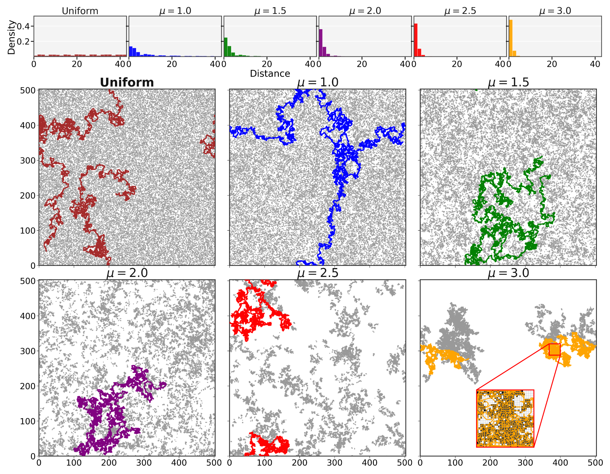
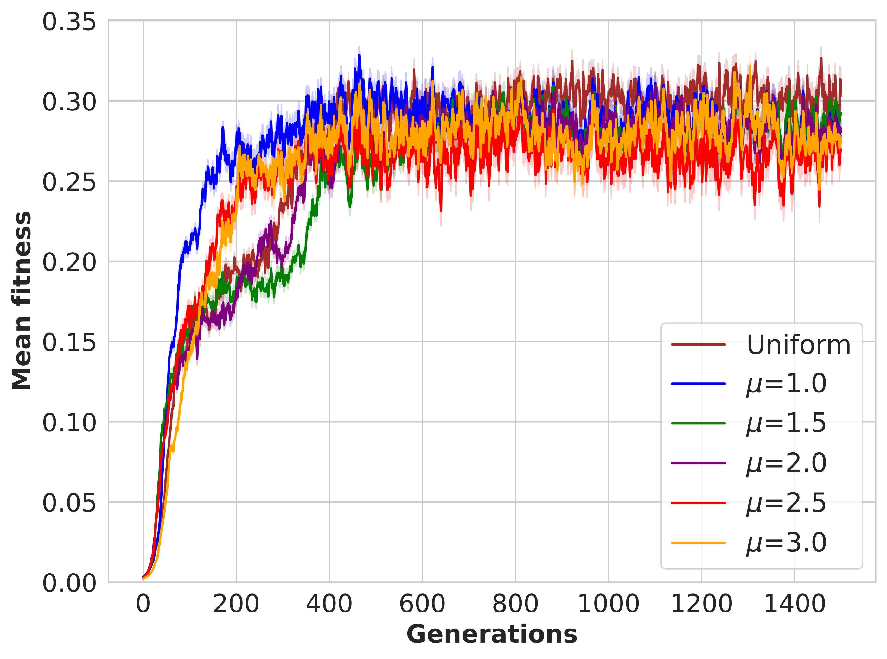
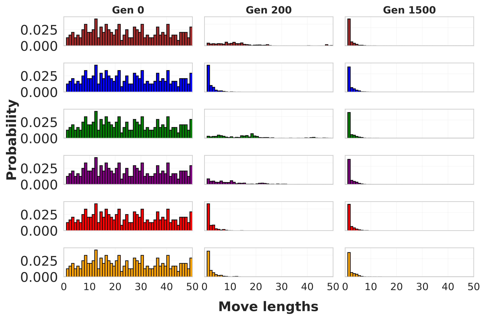
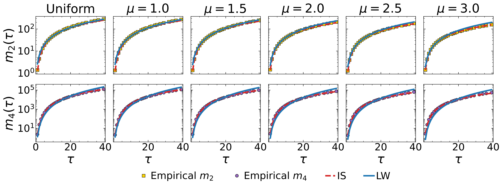
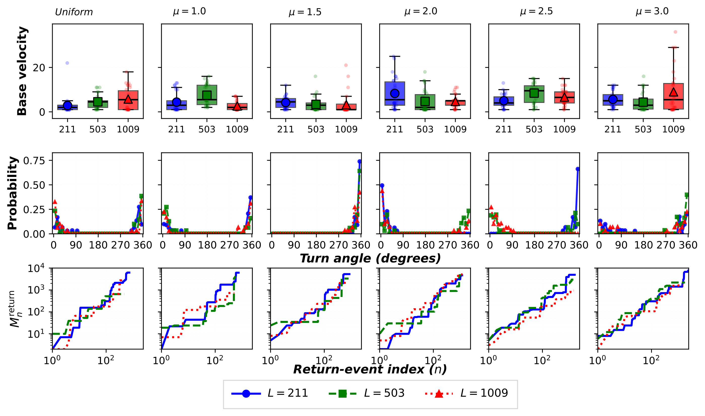
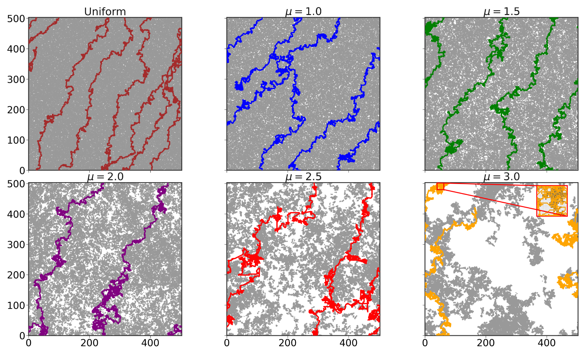

Research project · NeurIPS 2026
Evolutionary foraging in grids: Intermittent search dynamics emerge in finite, depletable landscapes
Manuscript
Abstract
How search strategies evolve in finite, depletable landscapes remains a central question in foraging theory. We study this problem with an evolutionary simulation in which agents forage on a two-dimensional toroidal lattice containing non-renewable resources distributed either uniformly or as Lévy dust. Each agent carries a heritable genome encoding step lengths, velocities, and turning angles, and selection acts on a fitness function combining energetic gain, movement cost, and coverage efficiency. By allowing movement traits to evolve without imposing a prescribed power-law step-length distribution, we test whether the evolved trajectories are better described by intermittent-search or Lévy-walk dynamics. Strikingly, our results indicate that, in the finite depletion-driven landscapes considered here, evolved search is more consistent with intermittent dynamics than with strict scale-free Lévy motion. To characterize the effective dynamics of the evolved trajectories, we take the average adjusted coefficient of determination when fitting second- and fourth-order displacement moments to intermittent search and Lévy-walk models. While a Lévy-like random walk fits with the numerical results from the evolutionary search very well (mean adjusted R̄² > 0.9 in most tested conditions), the intermittent search achieves a closer fit, with mean adjusted coefficients of determination (R̄² > 0.99) for all tested resource distributions. This preference holds across the tested grid sizes and resource densities. Five independent evolutionary runs per environment on a 503 × 503 grid at nominal resource density ρ = 0.15 reproduce this preference for the uniform environment and the five Lévy-dust environments. Evolution rapidly reshapes the movement genome toward short displacements while retaining a sparse tail of longer relocations, consistent with local exploitation punctuated by occasional transfer. The framework provides a controlled setting for studying how search rules emerge under resource limitation and may inform resource-constrained exploration in autonomous systems. Project webpage: https://evo-foraging.github.io/
Resource landscapes and best evolved trajectories
Figure
Original full-resolution PNG ↗
From the manuscript introduction
Method
Here, we develop an evolutionary simulation framework that combines genome-encoded movement traits, finite lifetimes, explicit resource depletion, and controlled resource clustering. Agents forage on two-dimensional toroidal lattices containing non-renewable resources distributed either as Lévy dust or uniformly. Selection acts on a fitness function that rewards energetic efficiency and low-redundancy spatial coverage. We analyze how movement genomes evolve across resource environments, classify evolved trajectories using second- and fourth-moment fits to LW and IS models, and quantify waiting-time statistics under depletion.
Original scientific figures
Figures
Select a figure to view its high-resolution preview. The original files are available beneath each figure.
Evolution of fitness
Figure 2 · Left
Original vector PDF ↗
Step-length genome distributions
Figure · Right
Original vector PDF ↗
Moment-based trajectory comparison
Figure
Original vector PDF ↗
Movement traits and return intervals
Figure
Original vector PDF ↗
Resource maps and trajectories at high density
Figure
Original full-resolution PNG ↗
NeurIPS 2026
Paper and code
Shailendra Bhandari, Alex Szorkovszky, Anis Yazidi, and Pedro G. Lind.